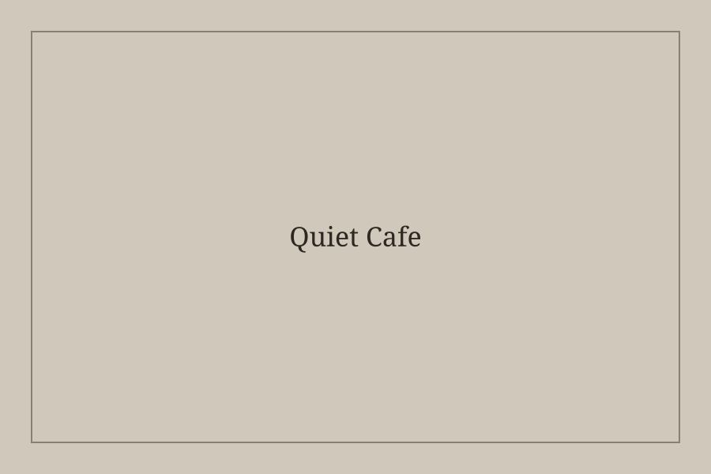
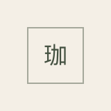
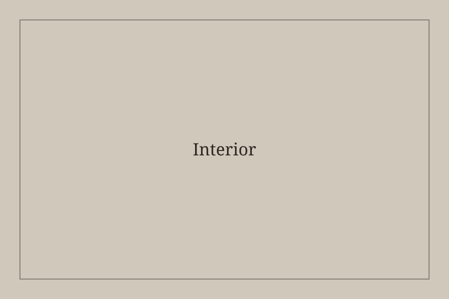
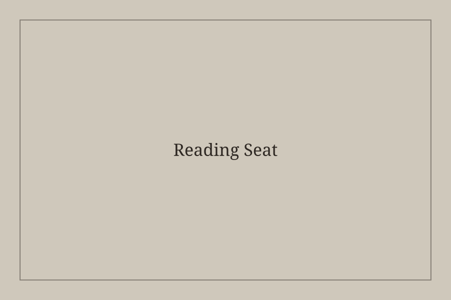
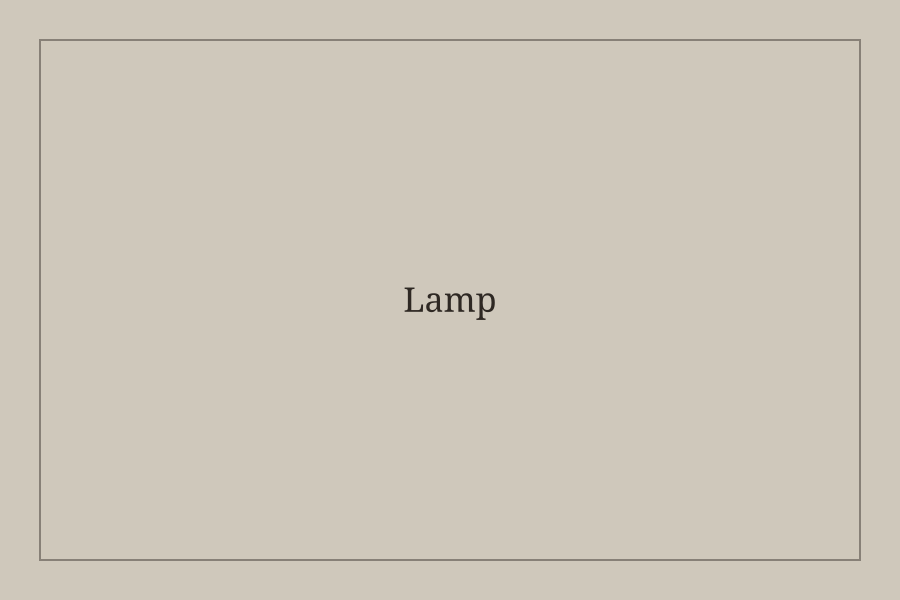

Coffee, Books, and Quiet Time
喫茶 綴ルは、深煎り珈琲と本を通じて、思考を静かに整えるための喫茶店です。 一人で過ごす時間と、本や珈琲をきっかけにした知的な交流を大切にしています。
静かな席で、珈琲と本に向き合う時間をお過ごしいただけます。

哲学・文学・エッセイを中心に、長く読み継がれる本を選書しています。
月に2回、選書と珈琲を楽しむ読書探訪イベントを開催しています。



営業時間 / 10:00 - 19:00（火曜定休）